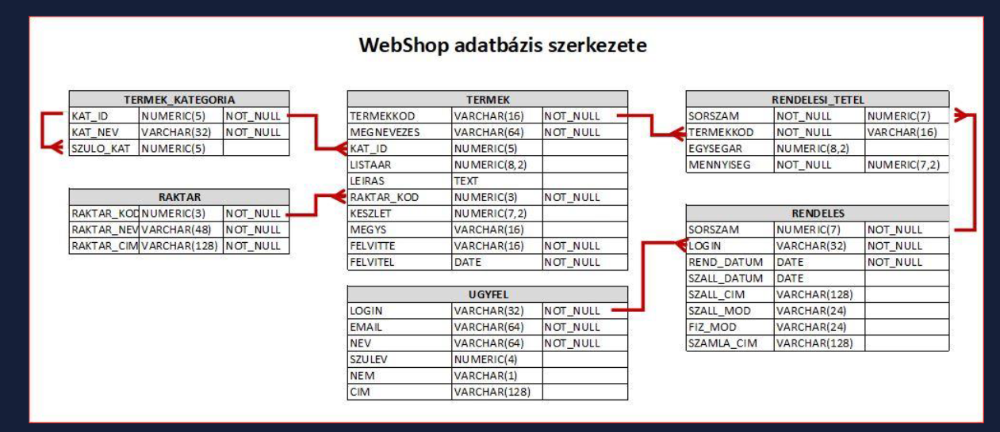
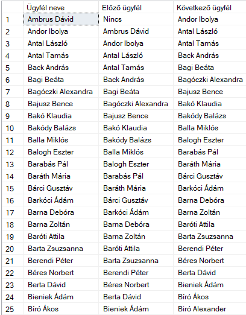
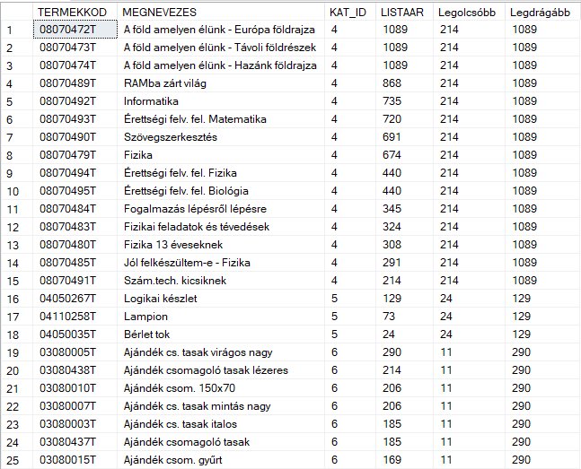
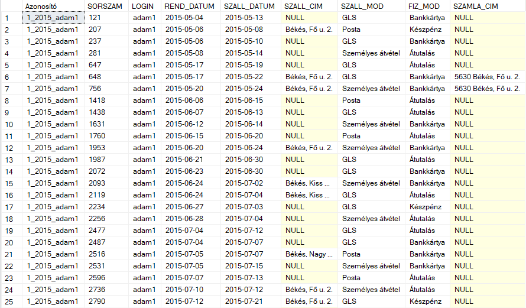
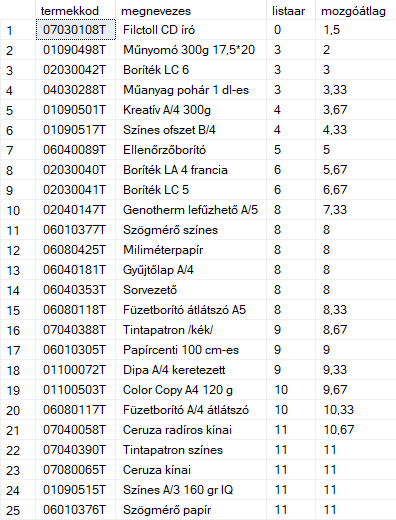
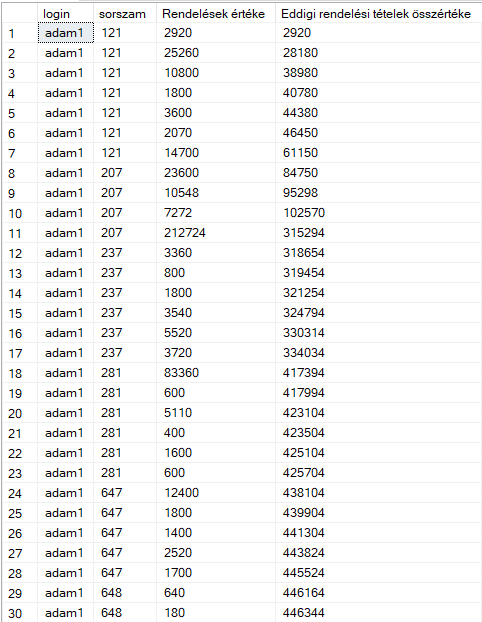

T-SQL Window Functions
Advanced SQL Server examples using partitions, ranking, previous and next row logic, moving averages, and cumulative calculations.
Overview
This project uses a sample webshop database containing information about products, orders, customers, and pricing data. The dataset is designed to simulate a typical e-commerce environment and is used to demonstrate SQL querying techniques such as aggregations, joins, ranking, and analytical functions. This project page focuses on one of the most useful advanced topics in SQL Server: window functions. These functions make it possible to analyze rows in relation to other rows without collapsing the result set like a traditional GROUP BY query would do.
The selected examples show how T-SQL can be used for row-by-row analytical logic such as ranking, previous and next value lookup, moving averages, partition-based comparisons, and cumulative totals. These are highly practical techniques for reporting, business analysis, and dashboard-oriented query design.
What This Project Demonstrates
Partitioned Analysis
Queries can be evaluated inside logical groups without losing the detail rows of the original dataset.
Row-to-Row Comparison
Functions like LAG and LEAD allow the current row to be compared with previous or next rows.
Ranking and Ordering
Window functions support ranking logic, sequence generation, and ordered analytical output.
Analytical Metrics
Moving averages and cumulative sums can be calculated directly in SQL without exporting the data elsewhere.
Optional Result Visuals

Core T-SQL Concepts Used
OVER() → PARTITION BY → ORDER BY → LAG / LEAD / FIRST_VALUE / DENSE_RANK → ROWS BETWEEN → Running Calculations
OVER()
Defines the analytical window for each function and keeps the original row structure intact.
PARTITION BY
Restarts the calculation inside logical groups such as category, customer, or warehouse.
ORDER BY inside OVER()
Specifies the sequence used for ranking, previous/next values, and cumulative calculations.
Window Frames
Used to define dynamic ranges such as previous, current, and next rows for moving averages.
Selected Example Queries
The following five examples were selected because together they cover the most important practical uses of window functions in T-SQL: relative row lookup, partition-based value comparison, ranking, moving averages, and cumulative totals.
Example 1 — Previous and Next Customer by Name
This query lists customers in alphabetical order and shows the previous and next customer name for each row. It is a simple but very clear example of how LAG() and LEAD() work.
This type of logic is useful when the task involves comparing neighboring rows in a sorted list.
SELECT nev AS 'Ügyfél neve',
COALESCE(LAG(nev,1) OVER (ORDER BY nev), 'Nincs') AS 'Előző ügyfél',
COALESCE(LEAD(nev,1) OVER (ORDER BY nev), 'Nincs') AS 'Következő ügyfél'
FROM ugyfel
ORDER BY nev;

Example 1 Query Results
Example 2 — Lowest and Highest Product Price Inside Each Category
This example uses FIRST_VALUE() with PARTITION BY to show the cheapest and most expensive product prices within each product category. The original detail rows remain visible, which makes the query especially useful for side-by-side comparison.
This is a strong example of partition-based analysis because each row can be interpreted relative to its own category.
SELECT TERMEKKOD,
MEGNEVEZES,
KAT_ID,
LISTAAR,
FIRST_VALUE(LISTAAR) OVER(PARTITION BY KAT_ID ORDER BY LISTAAR) AS 'Legolcsóbb',
FIRST_VALUE(LISTAAR) OVER(PARTITION BY KAT_ID ORDER BY LISTAAR DESC) AS 'Legdrágább'
FROM Termek;

Example 2 Query Results
Example 3 — Order Identifier with Partitioned Ranking
This query generates a custom identifier for each order based on customer and order year. The numbering restarts for each customer and year combination, which demonstrates analytical ranking logic in a business-friendly form.
This kind of logic is useful for generating grouped sequences and readable business identifiers directly in SQL.
SELECT CONCAT(
DENSE_RANK() OVER(PARTITION BY [Login] ORDER BY YEAR(rend_datum)),
'_',
YEAR(rend_datum),
'_',
[Login]
) AS 'Azonosító',
*
FROM rendeles;

Example 3 Query Results
Example 4 — Moving Average of Product Prices
This query calculates a moving average of product prices by taking the previous, current, and next row into account. It is one of the clearest examples of a true window frame using ROWS BETWEEN.
This is a valuable analytical pattern because it shows how SQL can calculate local trends, not just global summaries.
SELECT termekkod,
megnevezes,
listaar,
ROUND(
AVG(listaar) OVER(
ORDER BY listaar
ROWS BETWEEN 1 PRECEDING AND 1 FOLLOWING
), 2
) AS 'mozgóátlag'
FROM termek;

Example 4 Query Results
Example 5 — Cumulative Order Value by Customer
This example creates a running total of order item values for each customer. The calculation restarts for each customer and grows row by row according to order sequence.
This is one of the most practical uses of window functions, especially in financial, sales, and operational reporting.
SELECT rendeles.[login],
rendeles.sorszam,
(rendeles_tetel.egysegar * rendeles_tetel.mennyiseg) AS 'Rendelések értéke',
SUM(rendeles_tetel.egysegar * rendeles_tetel.mennyiseg)
OVER (
PARTITION BY rendeles.[login]
ORDER BY rendeles.sorszam, rendeles_tetel.sorszam
ROWS BETWEEN UNBOUNDED PRECEDING AND CURRENT ROW
) AS 'Eddigi rendelési tételek összértéke'
FROM rendeles_tetel
JOIN rendeles
ON rendeles_tetel.sorszam = rendeles.sorszam
ORDER BY rendeles.[login], rendeles.sorszam, rendeles_tetel.sorszam;

Example 5 Query Results
Why These Examples Are Strong
They Keep Detail Rows
Unlike GROUP BY, window functions allow analysis without losing the original record-level output.
They Show Real Analytical Patterns
The examples are close to practical BI and reporting tasks rather than only academic syntax exercises.
They Cover Multiple Function Types
The selection includes lookup, ranking, partition comparison, moving windows, and cumulative logic.
They Are Portfolio-Friendly
Each query is readable, demonstrative, and visually suitable for presenting SQL skills in a project portfolio.
Key Takeaways
- Window functions are essential for advanced SQL analytics. They make it possible to compare rows, rank values, and calculate trends without collapsing the dataset.
- PARTITION BY is a powerful grouping alternative. It allows calculations to restart inside categories, customers, or other logical segments.
- Running totals and moving averages are highly practical. These patterns appear frequently in reporting, finance, and sales analysis.
- The selected queries demonstrate real SQL Server value. They go beyond basic querying and show analytical thinking directly inside the database layer.
Navigation
This page is part of the T-SQL portfolio section and focuses specifically on window functions and row-based analytical calculations.